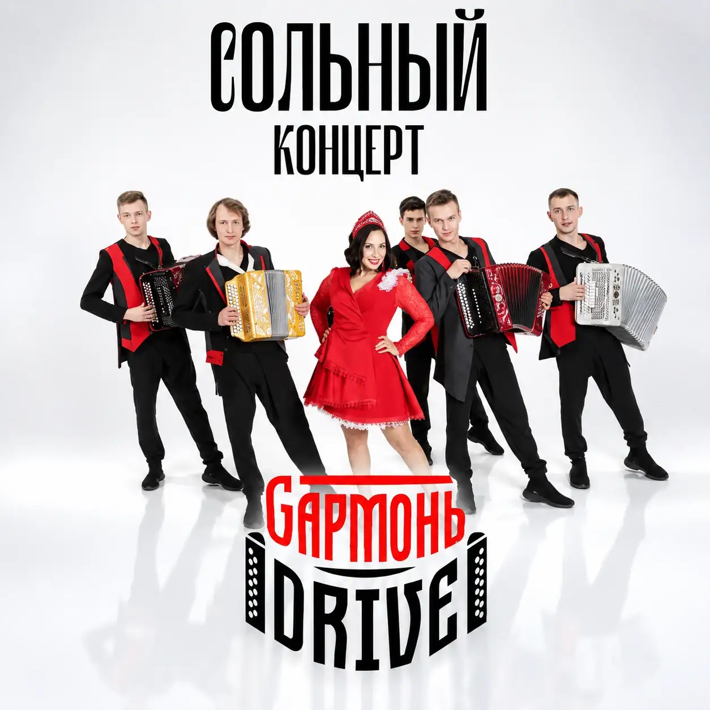

28:14
28:14Наследие
Код гостеприимства
28 минут · Harmony Drive Tube

Все материалы
Поиск по названиям, описаниям, тегам, категориям, авторам и каналам через настоящий маршрут MediaCMS /api/v1/search.
28:1428 минут · Harmony Drive Tube
 36:02
36:0236 минут · Музыкальный Кавказ
 19:48
19:4819 минут · Сцена Кавказа
 24:30
24:3024 минуты · Живые ремёсла
 17:11
17:1117 минут · Кавказ рядом

31:4031 минута · Атлас одежды